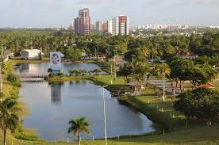

Parque da Sementeira

O parque pode ser utilizado pelos aracajuanos e turistas para prática de atividades esportivas e de lazer,
pesquisas ambientais
além de outras atividades em contato com a natureza. O espaço conta
com parque infantil, campo de futebol
quadra poliesportiva, espaço com aparelhos para exercícios físicos, pista para caminhada, quiosques para piqueniques, sanitários, lagos, e iluminação adequada.
Atrativos do Parque da Sementeira
- Parque infantil
- Campo de futebol
- Quadra poliesportiva
- Aparelhos para exercicíos fisicos
- Pista para caminhada
- Quiosques para piqueniques
- Sanitários
- Lagos e áreas verdes
- Iluminação adequada para visitas noturnas